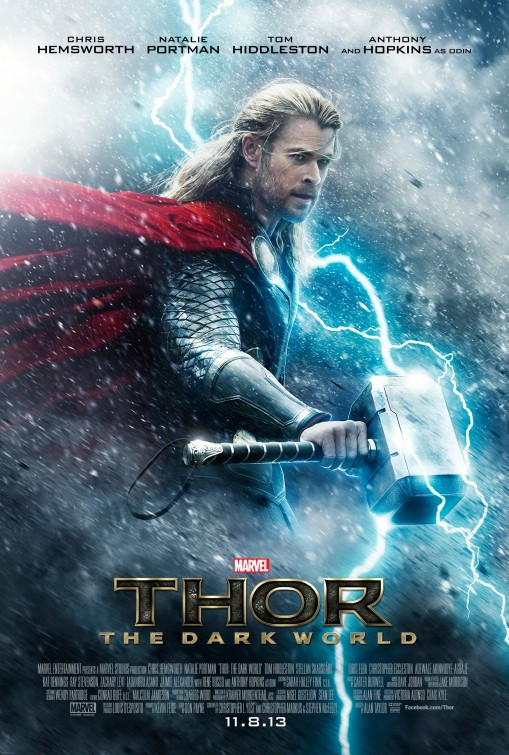

|  |
Movie Name: |
Thor: The Dark World (2013) |
|
Eons ago, Bor, father of Odin, clashes with the Dark Elf Malekith, who seeks to unleash a weapon known as the Aether on the nine realms. After conquering Malekith's forces, including enhanced warriors called the Kursed, on their home world of Svartalfheim, Bor safeguards the Aether within a stone column. Unbeknownst to Bor, Malekith, his lieutenant Algrim, and a handful of Dark Elves escape into suspended animation. In present-day Asgard, Loki stands imprisoned for his war crimes on Earth.1 Meanwhile, Thor, alongside warriors Fandral, Volstagg, and Sif, repel marauders on Vanaheim, home of their comrade Hogun; it is the final battle in a war to pacify the Nine Realms following the reconstruction of the Bifröst, the "Rainbow Bridge" between realms, which had been destroyed two years earlier.2 The Asgardians soon learn that the Convergence, a rare alignment of the Nine Realms, is imminent; as the event approaches, portals linking the worlds appear at random. In London, astrophysicist Dr. Jane Foster and her intern Darcy Lewis travel to an abandoned factory where such portals have appeared, disrupting the laws of physics around them. Separating from the group, Jane is teleported to another world, where she is infected by the Aether. Heimdall alerts Thor that Jane has moved beyond his near all-seeing vision, leading Thor to Earth. When Thor finds Jane, she inadvertently releases an unearthly force, and Thor returns with her to Asgard. Odin, recognizing the Aether, warns that the Aether will not only kill Jane, but that its return heralds a catastrophic prophecy. Malekith, awakened by the Aether's release, turns Algrim into a Kursed and attacks Asgard. During the battle, Malekith and Algrim search for Jane, sensing that she contains the Aether. Thor's mother Frigga is killed protecting Jane, and Malekith and Algrim are forced to flee without Jane. Despite Odin's orders not to leave Asgard, Thor reluctantly enlists the help of Loki, who knows of a secret portal to Svartalfheim, where they will use Jane to lure and confront Malekith, away from Asgard. In return, Thor promises Loki vengeance on Malekith for killing their mother. With Volstagg and Sif stalling Asgardian soldiers and Fandral assisting their escape, Thor, Loki, and Jane head to Svartalfheim. There, Loki tricks Malekith into drawing the Aether out of Jane, but Thor's attempt to destroy the exposed substance fails. Malekith merges with the Aether and leaves in his ship as Loki is fatally wounded while killing Algrim. Thor, cradling Loki in his arms, promises to tell their father of his sacrifice. Afterwards, Thor and Jane discover another portal in a nearby cave and reunite in London with Darcy and Jane's mentor Dr. Erik Selvig — who was briefly institutionalized due to the mental trauma he suffered during Loki's attack on Earth. They learn that Malekith plans to restore the Dark Elves to dominance by unleashing the Aether at the center of the Convergence in Greenwich. Thor battles Malekith through various portals and across multiple worlds until one portal separates them, leaving Malekith unopposed on Earth. Thor returns in time to help his mortal comrades use their scientific equipment to transport Malekith to Svartalfheim, where he is crushed by his own damaged ship. Thor returns to Asgard, where he declines Odin's offer to take the throne and tells Odin of Loki's sacrifice. As he leaves, Odin's form transforms into Loki, who is alive and impersonating Odin. In a mid-credits scene, Volstagg and Sif visit the Collector and entrust the Aether to his care, commenting that with the Tesseract already in Asgard, having two Infinity Stones so close together would be unwise. As they leave, the Collector remarks, "One down, five to go." In a post-credits scene, Jane and Thor reunite on Earth while somewhere in London a frost monster from Jotunheim, accidentally transported to Earth during the final battle, continues to run amok. |
||